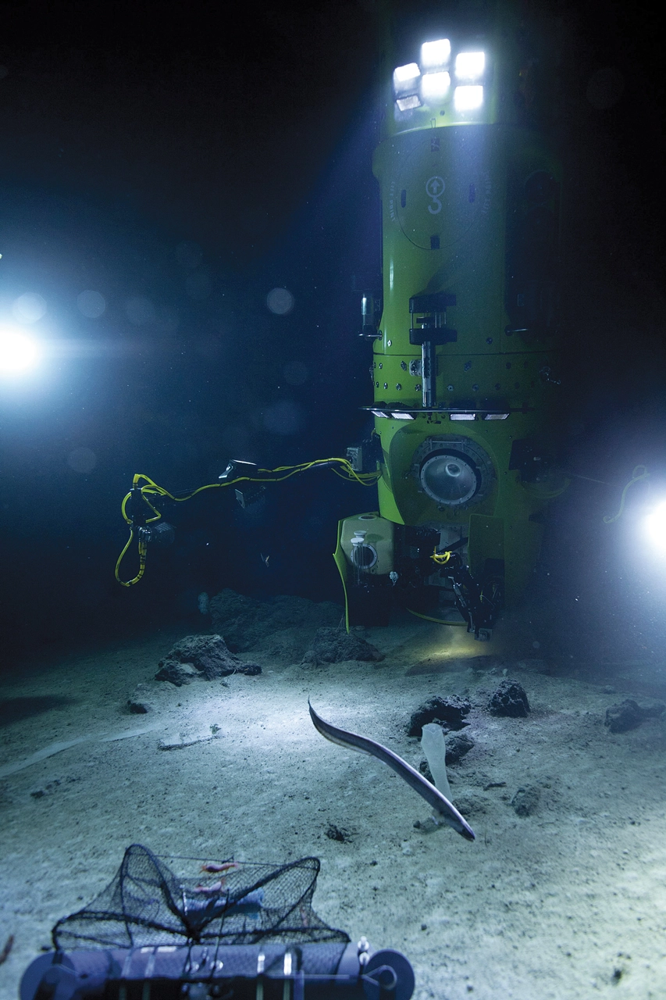
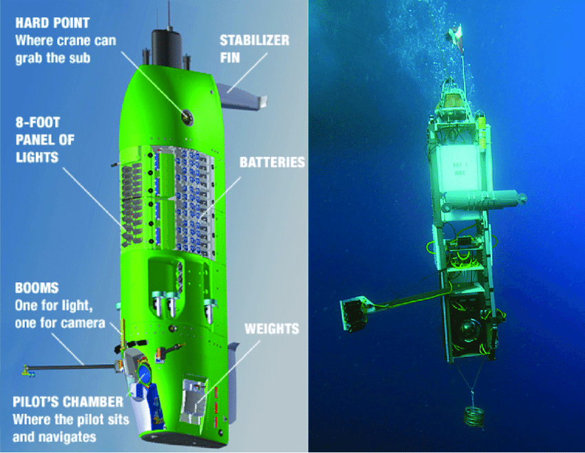
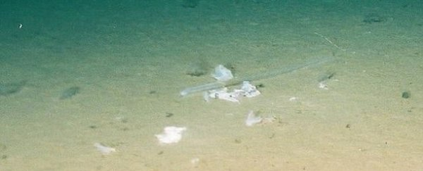
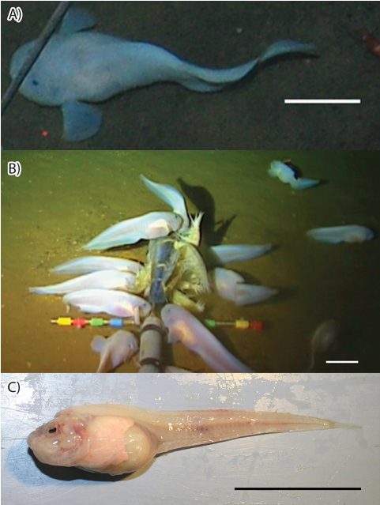

Featured
Challenger Deep
The official name for the deepest most point of Earth's seabed.
Named after the British Royal Navy survey ship HMS Challenger who made the first recordings of its depths using depth sounding.
Contrary to the name, Depth Sounding involved a heavy weight tied to a rope and letting it sink to the ocean floor.
Challenger Deep's Environment
The extremely high water pressure makes exploration not only extremely dangerous, but designing and operating crafts extremely difficult.
The absence of light makes it difficult to traverse the depths with the limited range of the submarine's flashlights.
Only 600 people have been to space, whereas 22 have only been to Challenger Deep.
The Deepsea Challenger
Life in the Trench
One of the most notable things first found at Challenger Deep was a plastic bag.
The media went wild with articles questioning and reprimanding how badly we treat our oceans.
Supergiant Amphipods
Deepsea Gigantism is the tendency for deep-dwelling sea creatures to be much larger than their shallow water cousins.
A reason as to why deep-dwelling sea creatures are much larger is the fact that larger animals have much more efficient metabolism and can withstand food scarcity at the bottom of the ocean.
Mariana Snailfish
Sources
- http://www.deepseachallenge.com/the-expedition/mariana-trench/
- https://www.ncei.noaa.gov/news/planet-postcard-mariana-trench#:~:text=The%20Mariana%20Trench%20was%20formed,sometimes%20even%20collide%20head%2Don.
- https://www.britannica.com/place/Mariana-Trench
- https://www.scientificamerican.com/article/the-mariana-trench-is-7-miles-deep-whats-down-there/
- http://www.deepseachallenge.com/the-expedition/mariana-trench/#:~:text=The%20depths%20of%20the%20Mariana,using%20a%20weighted%20sounding%20rope.
- https://a-z-animals.com/blog/what-lives-at-the-bottom-of-challenger-deep/
- https://www.soest.hawaii.edu/soestwp/announce/press-releases/new-species-and-surprising-findings-in-the-mariana-trench/
- https://www.livescience.com/23387-mariana-trench.html
- https://manoa.hawaii.edu/exploringourfluidearth/physical/ocean-floor/seafloor-features
- https://en.wikipedia.org/wiki/Depth_sounding
- https://en.wikipedia.org/wiki/Mariana_Trench
- https://en.wikipedia.org/wiki/Deepsea_Challenger
- https://www.science.org/doi/10.1126/science.1222641
- https://sites.rootsweb.com/~mosmd/handline.htm
- https://www.researchgate.net/figure/Illustration-of-the-DEEPSEA-CHALLENGER-on-the-left-and-a-photograph-of-the-DEEPSEA_fig2_270969032
- https://www.sciencealert.com/plastic-bag-found-deepest-point-ocean-we-should-all-be-ashamed-mariana-trench-pollution
- https://en.wikipedia.org/wiki/Pseudoliparis_swirei